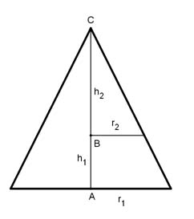

Aufgabe 207 Ein gerader Kegel wird parallel zu seinem Grundkreis so geschnitten, dass sein Volumen halbiert wird. Wie hängen der Grundkreisradius r1 und der Radius der Schnittfläche r2 voneinander ab?

V2 = 1/2 V1 AC = h1 BC = h2 л * r22 * h2 л * r12 * h1 -------------- = 1/2 * -------------- |*3 3 3 л * r22 * h2 = 1/2 * л * r12 * h1 |:л r22 * h2 = 1/2 * r12 * h1 |*2 2 * r22 * h2 = r12 * h1 (1) Strahlensatz: r1 h1 ---- = ---- |*h2 r2 h2 r1 * h2 -------- = h1 |*r2 r2 r1 * h2 = r2 * h1 |:r1 r2 * h1 h2 = --------- r1 In (1) eingesetzt: 2 * r22 * r2 * h1 ------------------- = r12 * h1 |:h1 r1 2 * r23 --------- = r12 |*r1 r1 2 * r23 = r13 |:2 r13 r23 = ---- | 2 r1 r2 = ---- r2 = 0,79 * r1